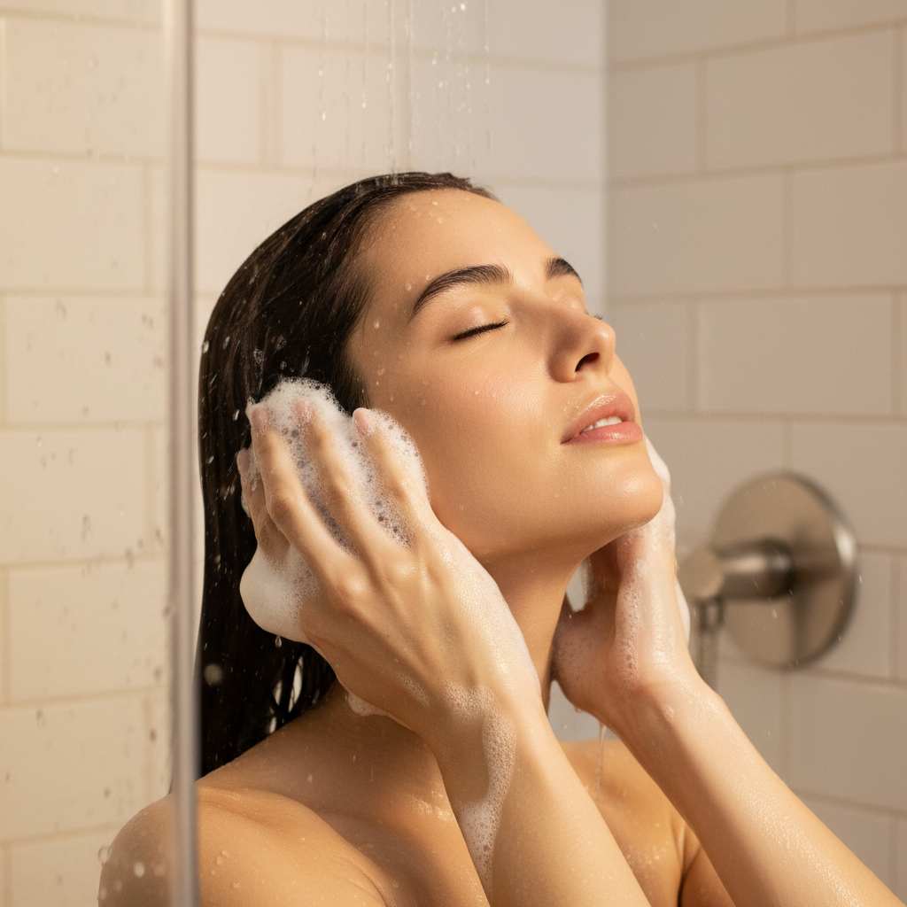
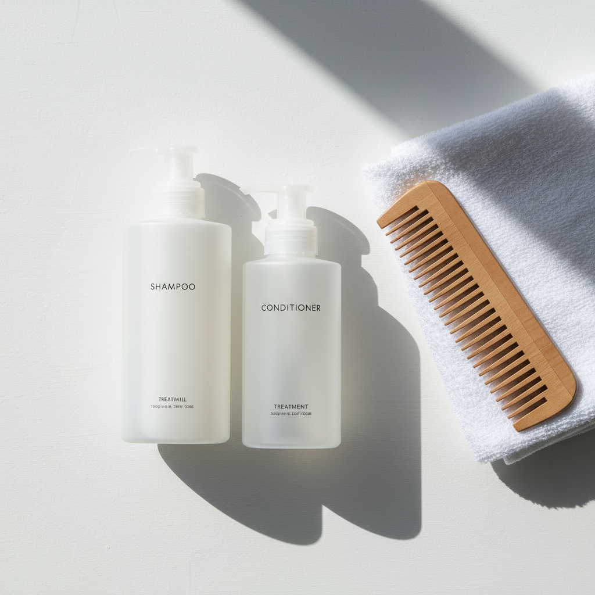
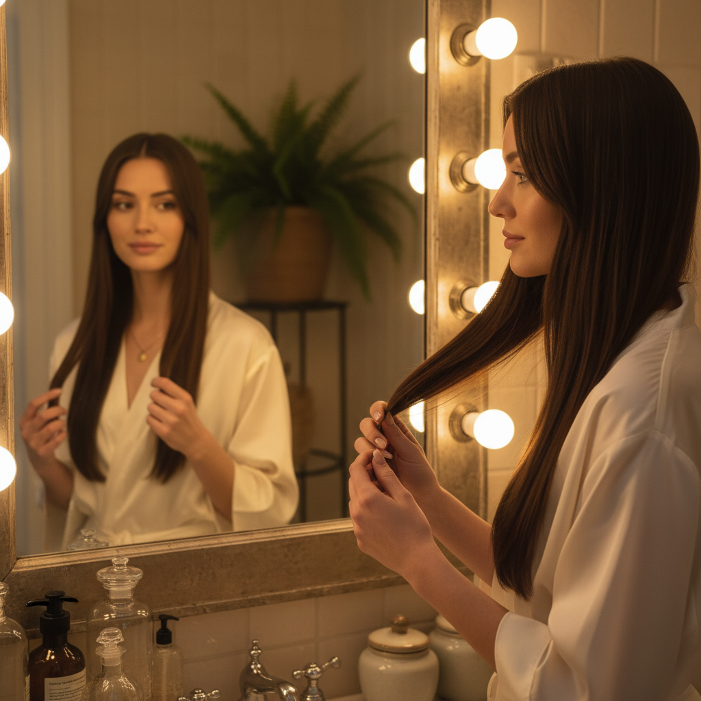
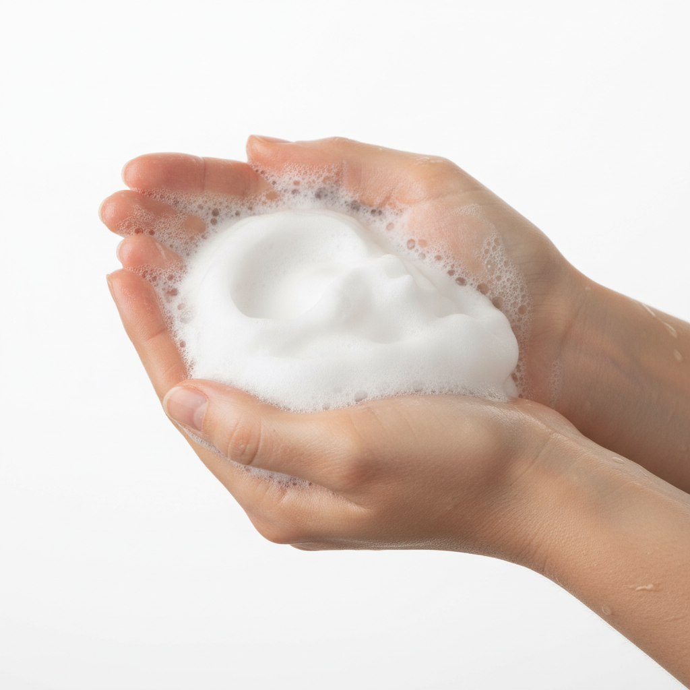

縮毛矯正をかけた翌日、シャンプーを手に取って「これ、使って大丈夫かな」と不安になったことはありませんか。せっかく数時間かけて手に入れたストレートが、合わないシャンプーで台無しになるのは避けたい。でも何を基準に選べばいいかわからない。
この記事では、縮毛矯正後の髪に起きていることを踏まえて、シャンプー選びの具体的な判断基準を5つに絞って説明します。
縮毛矯正後の髪は見た目以上にデリケート

縮毛矯正は、髪内部のタンパク質結合を一度切断し、まっすぐな状態で再結合させる施術です。仕上がりはツヤツヤでも、髪の内部はかなり負荷がかかっています。
施術直後はとくに不安定で、キューティクルが開きやすい状態が続きます。ここで洗浄力の強いシャンプーを使うと、再結合したばかりの結合が崩れたり、内部の水分やタンパク質が流出したりする。結果としてストレートの持ちが悪くなり、パサつきやうねりの戻りが早まります。
だからこそ、縮毛矯正後のシャンプー選びは「何で洗うか」がそのまま持ちの良さに直結します。
シャンプー選びで見るべき5つのポイント

縮毛矯正後のシャンプーを選ぶとき、私がサロンでお客様に伝えているのは次の5つです。
- アミノ酸系の洗浄成分がベースであること
- 硫酸系の洗浄成分が入っていないこと
- 髪内部を補修する成分が配合されていること
- 保湿成分がしっかり入っていること
- pHが弱酸性であること
順番に見ていきます。
まず洗浄成分。成分表の2〜3番目あたりに「ココイルグルタミン酸」「ラウロイルメチルアラニン」などの名前があれば、アミノ酸系です。髪と同じタンパク質由来の洗浄成分なので、必要な油分まで落としすぎません。逆に「ラウレス硫酸Na」「ラウリル硫酸Na」が上位にあるシャンプーは洗浄力が強すぎます。縮毛矯正後の髪には避けてください。成分表の読み方をもっと詳しく知りたい方は、シャンプーの成分表の読み方の記事も参考になります。
次に補修成分。ペリセアのように短時間で髪内部に浸透する成分や、エルカラクトンのようにドライヤーの熱で髪を補修する成分が入っていると、毎日のシャンプーが同時にケアの時間にもなります。ヒアルロン酸やコラーゲンといった保湿成分も、髪のうるおいを保つために欠かせません。
pHは見落とされがちですが、弱酸性のシャンプーを選ぶことも大切です。縮毛矯正後の髪はアルカリに傾いていることが多く、弱酸性のシャンプーで元の状態に戻してあげる必要があります。
施術当日から1週間のシャンプーの仕方

選び方と同じくらい大事なのが、洗い方とタイミングです。
施術当日はシャンプーを避けてください。縮毛矯正の薬剤が髪内部で安定するまでに時間がかかるため、最低でも24時間は濡らさないのが理想です。美容室によっては「当日洗ってOK」と言われることもありますが、持ちを優先するなら翌日まで待ったほうが確実です。
翌日からの1週間は、いつもよりやさしく洗うことを意識します。シャンプーを手のひらでしっかり泡立ててから髪にのせ、頭皮を指の腹で洗う。髪同士をこすり合わせるのは避けます。すすぎは泡が完全になくなるまで丁寧に。シャンプー後はトリートメントを中間から毛先になじませ、2〜3分置いてから流します。
ドライヤーもポイントです。自然乾燥は髪が濡れた状態で摩擦を受けやすく、キューティクルが傷みます。洗ったらすぐ、根元から乾かしてください。
週1〜2回の集中ケアで縮毛矯正を長持ちさせる

毎日のシャンプーに加えて、週に1〜2回の集中ケアを取り入れると、縮毛矯正の持ちが変わります。
やり方はシンプルです。シャンプーを泡立てたら、そのまま髪全体を泡で包み、1〜2分間パックするように置く。いわゆる泡パックです。ペリセアのような浸透型の補修成分が配合されたシャンプーなら、この短い時間でも成分が髪内部に届きます。
泡パックのあとはいつも通りすすいで、トリートメントへ。トリートメントも少し長めに置くと、内部補修と表面のコーティングが同時に進みます。
特別な道具も追加のアイテムも要りません。普段のシャンプーの時間を少し長くするだけで、サロン帰りのような手触りが続きやすくなります。
縮毛矯正後に避けたいNG習慣
シャンプー選びを見直しても、日常の習慣で髪を傷めていたら意味がありません。よくあるNGパターンを挙げておきます。
- 熱いお湯で洗う。38度前後のぬるま湯がベスト
- タオルでゴシゴシ拭く。押さえるように水分を取る
- 濡れたままヘアアイロンを使う
どれも当たり前に聞こえるかもしれませんが、サロンで「なぜか持ちが悪い」と相談されるお客様の多くが、このどれかに心当たりがあります。
仕上げにヘアオイルを毛先になじませるのもおすすめです。オイルは髪表面にうすい膜をつくり、外部の摩擦や乾燥から守ってくれます。つけすぎるとベタつくので、1〜2滴を手のひらに広げてから毛先だけになじませてください。
縮毛矯正後の髪を長くきれいに保てるかどうかは、毎日のシャンプーで決まるといっても言いすぎではありません。洗浄成分を確認して、やさしく洗って、週に1回の泡パックを試してみる。それだけでストレートの持ちは変わります。